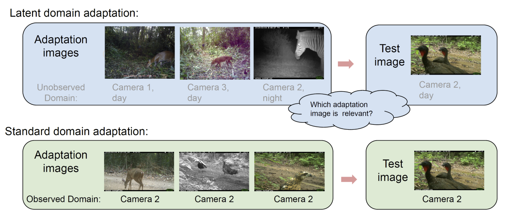
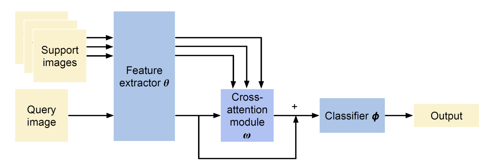
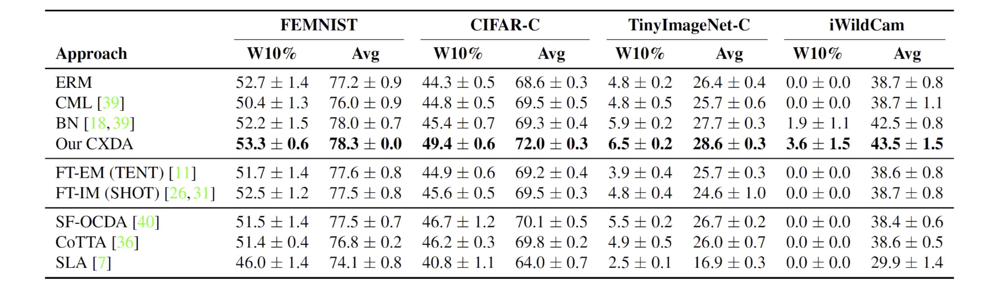
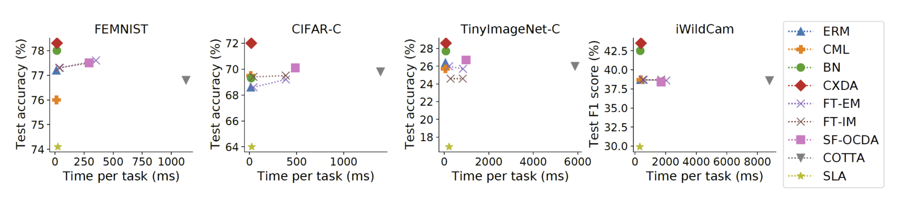

Proposed Problem Setting
Our key motivation is to adapt a model on the user's device to optimize
performance on local data distribution. There are several challenges and
desiderata associated with such setup:
- Keep data local for privacy: local processing and no cloud
- Feed-forward: backpropagation is slow and may not be supported on
mobile devices
- Latent domains: user's local stored data is of mixed relevance to
each test instance
- No labels: no class or domain labels for user's examples
- Source-free: access only to the pre-trained model, not the source
data

Figure 2: Comparison of standard and latent domain
adaptation settings.
Our Solution: CXDA
Our key idea is to use a cross-attention mechanism to identify and exploit
relevant support instances for adapting to the query example. The
cross-attention mechanism and other parameters of the model are pre-trained by
solving many adaptation tasks using source data.

Figure 3: Overview of our solution to address the
proposed problem setting.
Results
We evaluate the approach on various synthetic and real-world benchmarks, and
compare it with feed-forward baselines, back-propagation baselines and more
advanced baselines from related areas such as open compound domain adaptation.
The results highlight the usefulness of our CXDA for the proposed problem
setting.

Table 1: Average and worst-case (worst 10% tasks)
test performance, with standard error of the mean across 3 random seeds.
Speed Evaluation
Our CXDA gives the best performance and is capable of real-time adaptation with
similar speed as the other feed-forward baselines. It is significantly faster
than the back-propagation based approaches.

Figure 4: Analysis of test accuracy vs time per
task for the various approaches evaluated.
Summary
We have introduced a new highly practical problem setting for
resource-constrained devices, characterised by unlabelled data, mixture of
domains and the need for feed-forward adaptation. To address this problem
setting, we have developed an approach called CXDA that selects relevant
examples via cross attention and uses them for real-time adaptation.
|